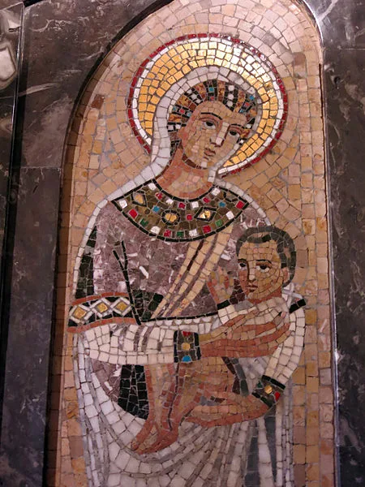

<!doctype html><html lang="en"><meta charset="utf-8"><meta name="viewport" content="width=device-width"><title>Perpetua — composition study</title><style>body{margin:0;background:#201c1b;color:#eee4d5;font:18px/1.6 Georgia}main{display:grid;grid-template-columns:1fr 1fr;max-width:1200px;margin:auto;min-height:90vh;align-items:center;gap:6vw;padding:4vw}img{width:100%;max-height:80vh;object-fit:contain}h1{font-size:clamp(60px,9vw,130px);font-weight:400;line-height:1;margin:0}p{max-width:30ch}small{color:#c9a56c}a{color:inherit}@media(max-width:600px){main{grid-template-columns:1fr}img{max-height:55vh}}</style><main><div><small>Composition study · not a browser capture</small><h1>Perpetua</h1><p>The Prison</p><p>An encounter with the transmitted <i>Passion</i>.</p><small>Later devotional art, not a historical likeness. Photograph: Enric, CC BY-SA 3.0. Mosaic artist and date unknown.</small><p><a href="https://perpetua-felicitas.carrieschroeder.org/items/show/40">Artwork source and attribution</a></p></div></main></html>
